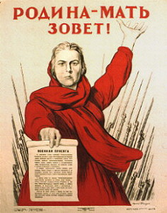
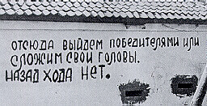
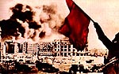

1940-1950

The 40s were the hardest times for Soviet Union. The World War II took the lives of 20 million Soviet Citizens. Hitler, who wanted to wipe Russia out of the face of the earth, killed civilians indiscriminately and mercilessly. Also many died under Stalin's purges in Gulags. Stalin also forcely displaced thousands of smaller nationalities, Germans, Baltic people, Tatars, Kalmyks, Chechens who also suffered greatly. After 4 years of bloody and gruesome war, the Soviet Union finally defeated Germans in 45.
Defeating the powerful Nazi Army, which overrun Europe required Soviets to mobilize and utilize all of its human and material resources. Nationalism, ideology were used to achieve that goal. Here, this war time poster depicts a older, strong woman, which represents motherland. The message: Mother-Land Calls.
The important battles of World War II.
900 day siege of Leningrad
From September 1941 to January 1944, Leningrad was completely surrounded by German army and cut off from the rest of Russia. Unable to take the city by all-out attack, the Germans decided to starve the city population to death. Only way out was on the ice of Lake Ladoga, which was under constant bombardment of German planes. One third of three million city population died of starvation. But the city stood firmly and heriocally till the end. Click here for more information.
Battle of Stalingrad

We will win or we will die here. There is no way back.
Perhaps the most important battle of World War II. The result of the
battle showed that the German army after all was not invincible. Using ingenious
military tactics Russian army lured Germans into the city surrounded them.
Fierce fighting took place for every building and street of the city. Hitler
ordered the armies not to surrender, and fight to the bitter end. With no
foodand supplies the 6th Army and 4th Panzer Army surrendered, The Germans
lost 147,000 men, and 91,000 were taken prisoner from The Battle of Stalingrad.
To learn more click here.

On May 8th, Soviet General Jukov's army captured Berlin. The photo shows a Soviet flag over the ruins of Berlin. Hitler committed suicide. Germany surrendered unconditionally first to US and Britain and the next day to Soviet on May 9th.
Post war restoration began immediately after the war. However Stalin was more occupied with foreign policy issues. He wanted to expand Soviet Sphere of influence westward. In Eastern Europe, which Red Army was occupying, pro-Soviet governments were installed. The development of nuclear weapon was a priority issue after the world learned about first atomic bomb in Hiroshima. The conflict between Soviet Union and US escalated during Berlin Blocade in 1949. It was an official beginning of Cold War.